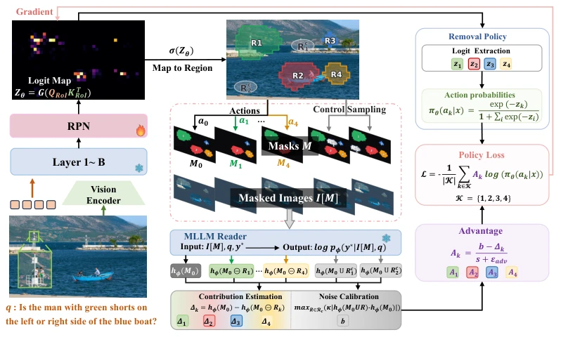
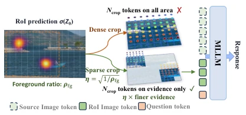
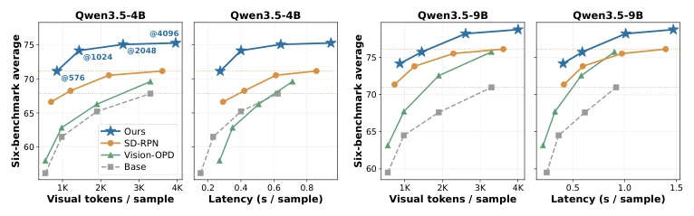
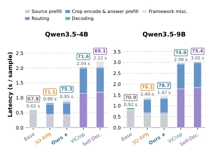
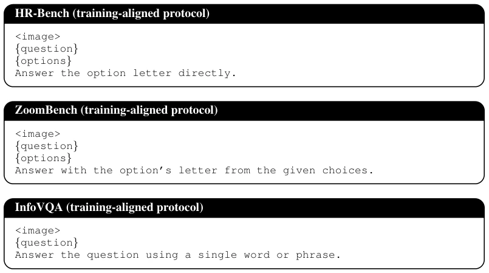
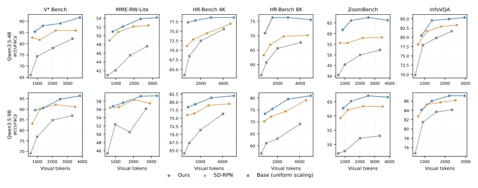
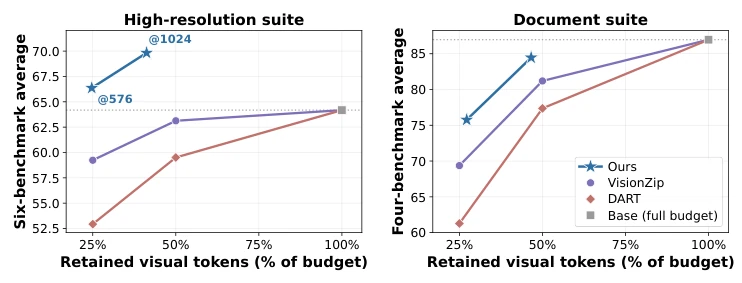
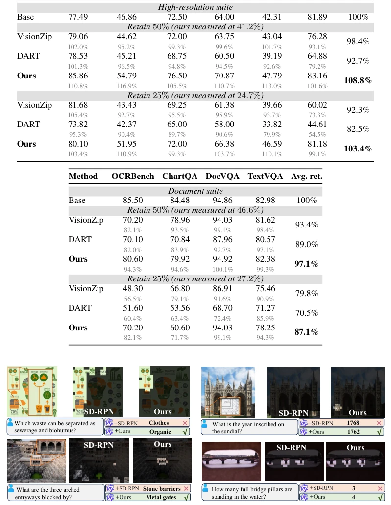

This paper offers a potent remedy for the MLLM's "fine-grained perception" pain point: since full high-resolution is too costly, it is better to decouple "finding targets" and "recognizing content". The core of Vision-RL2 lies in using reinforcement learning to fine-tune a lightweight RoI predictor, rather than touching the massive MLLM backbone. This approach indeed saves tokens, demonstrating on multiple benchmarks that full-resolution performance can be achieved with 1/4 of the visual tokens. But to be blunt, this is essentially an "external plugin" strategy, relying on a frozen MLLM as the judge, although training is fast, it may not allow the model to learn true reasoning logic like full fine-tuning does. Additionally, it assumes regions are coherent, which may not be flexible enough for scattered clues. Overall, this is a victory in engineering efficiency, not a qualitative change in model capability.
研究动机Motivation
多模态大模型（MLLM）在处理细粒度视觉任务时，通常依赖提升图像分辨率来增加视觉 Token，但这导致编码和预填充成本剧增。现有工作如 Wei et al. (2026) 提出的特权视图蒸馏，虽然有效但需全模型微调。另一种思路是通过注意力引导或迭代搜索进行路由（Zhang et al., 2025a），但这需要多次预填充或解码，延迟较高。本文通过诊断发现，定位感兴趣区域（RoI）对 Token 压缩的容忍度比识别内容高 3-4 倍，这揭示了分辨率解耦的潜力。然而，现有的 SD-RPN（Shi et al., 2026a）仅通过注意力蒸馏训练，缺乏答案级的监督信号，容易保留干扰区域或遗漏证据。因此，需要一种无需区域标注、能直接优化预测器对答案贡献的方法。
Multimodal Large Language Models (MLLMs) typically rely on increasing image resolution to increase visual tokens when handling fine-grained visual tasks, but this leads to a drastic increase in encoding and prefilling costs. Existing work such as privileged view distillation proposed by Wei et al. (2026), while effective, requires full model fine-tuning. Another approach involves routing through attention guidance or iterative search (Zhang et al., 2025a), but this requires multiple prefilling or decoding steps, resulting in higher latency. Through diagnosis, this paper finds that localizing Regions of Interest (RoI) tolerates token compression 3-4 times higher than recognizing content, revealing the potential of resolution decoupling. However, existing SD-RPN (Shi et al., 2026a) is trained only through attention distillation, lacking answer-level supervision signals, making it prone to retaining distractor regions or missing evidence. Therefore, a method is needed that requires no region annotation and can directly optimize the predictor's contribution to the answer.
The overall process of Vision-RL2 is divided into three stages: prediction, optimization, and encoding. First, a lightweight RoI predictor is built based on SD-RPN, generating a dense RoI map from MLLM intermediate layer features. Second, Region-Level RL is introduced to optimize the predictor. This method treats coherent visual regions as actions, utilizing a frozen MLLM as a Reader for scoring: removing regions with contribution to the answer below the noise threshold via a "Subtractive" objective, and recovering missed key evidence via an "Additive" objective. Scoring is based on leave-one-out, calculating the change in answer likelihood after removing a region, without gradient backpropagation to the Reader. Finally, Sparse Visual Encoding is adopted, performing high-resolution encoding only on predicted foreground regions, while background tokens are discarded, thereby significantly improving evidence resolution under a fixed token budget. The entire training updates only predictor parameters, requiring only one lightweight prediction during inference.

Figure 2: Overview of the proposed region-level RL. Predicted regions R1–R4 and control regions Rc 1, Rc 2 are extracted from the RoI map, the frozen reader scores each action’s masked image, and the resulting contributions ∆k and margin b form the advantages and policy loss. Group markers are dropped for clarity, so Rk, ∆k, Ak, s, πθ denote Rp k, ∆p k, Ap k, sp, πsub θ of Sec. 3.3, with M0 = Mp and Mk = M0 ⊖Rk. The additive group is omitted here for brevity.

Figure 3: Sparse visual encoding. A dense crop spends the budget Ncrop uniformly over the bbox, whereas the sparse crop encodes only foreground tokens at η× finer resolution. Source-image tokens are not re-encoded, and their KV cache is reused in part of the LLM layers.
Experiments are conducted on 6 fine-grained benchmarks (e.g., ZoomBench, HR-Bench) and 4 MLLM backbones (Qwen3.5, Qwen2.5-VL, Gemma-4). Results show that Vision-RL2 outperforms base models and SD-RPN under all token budgets. On the 4B model, it achieves the accuracy of SD-RPN at 4096 tokens using 4.2 times fewer tokens. Latency analysis shows that RPN routing requires only 31-49ms, far faster than attention routing (1.1-1.8s). Ablation studies confirm that Region-Level RL contributes the main gain, and sparse encoding further improves efficiency. Compared to full fine-tuning methods (e.g., Vision-OPD), Vision-RL2 remains leading or tied in accuracy while updating parameters by one order of magnitude less, proving its efficiency.

Figure 4: Six-benchmark average accuracy versus inference cost under the training-aligned short- answer protocol, for source-image token limits {576, 1024, 2048, 4096}. For each model scale, the left panel measures cost in visual tokens per sample (source plus crop) and the right panel as end- to-end latency. Per-benchmark token curves are given in Appendix B.3.

Figure 5: Latency decomposition of two-stage rout- ing mechanisms at the 4,096-token source limit, with the six-benchmark average accuracy above each bar. ViCrop (Zhang et al., 2025a) and Self- Dec. incur substantial cost for RoI routing. All methods share the protocol and GPU.

Figure 6 breaks the six-benchmark average of Figure 4 down into per-benchmark accuracy-versus- token curves. Our model lies above both the base model and the SD-RPN pipeline at every source- image token limit on all six benchmarks and at both scales.

Figure 6: Per-benchmark accuracy versus measured visual tokens per sample (source plus crop) for source-image token limits {576, 1024, 2048, 4096} under the training-aligned short-answer protocol (top row Qwen3.5-4B, bottom row Qwen3.5-9B).

Figure 7: Suite-average accuracy versus retained visual-token budget for the pruning comparison of Table 4. Pruning points sit at their exact keep fractions and converge to the base model at 100%. Our points sit at their measured totals. On the high-resolution suite our curve lies above the full-budget reference at every budget.

Figure 8: RoI predictions of SD-RPN and ours. Dimmed regions are the discarded tokens.